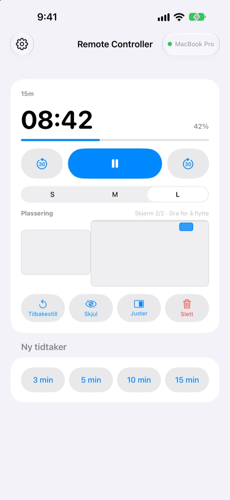
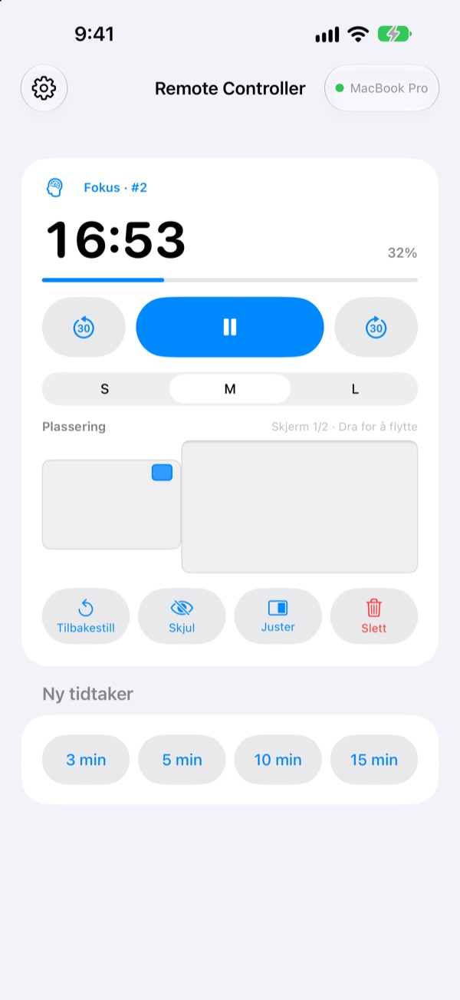
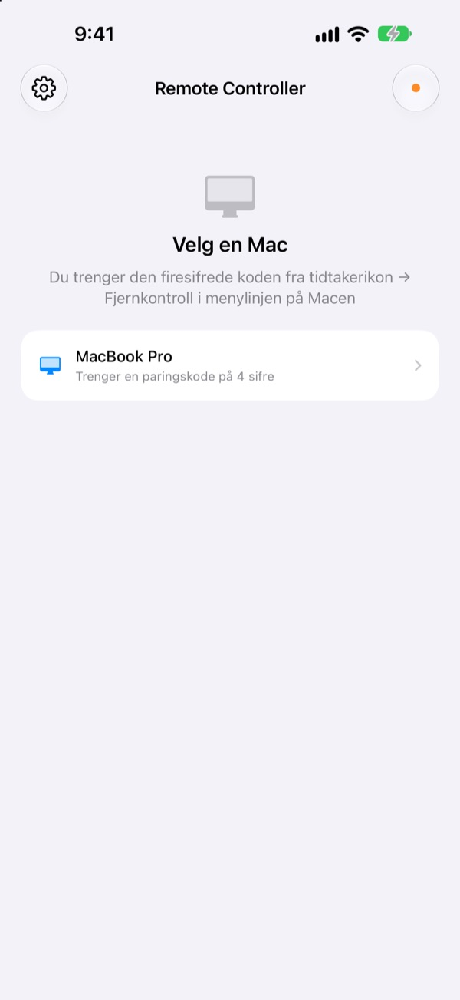

Macen blir stående.
Tidtakeren har du i hånden.
Styr tidtakerne i StickyPresenter på Macen fra iPhone. Du står fremst i rommet og ser likevel hvor mye tid som er igjen, setter på pause, legger til 30 sekunder eller flytter tidtakeren bort fra grafen den dekker.
Gratis · iOS 17 eller nyere · Krever en Mac med StickyPresenter på samme Wi‑Fi.

Går du fortsatt bort til PC-en for å røre tidtakeren?
Foredraget drar ut, og du trenger mer tid. Tidtakeren ligger rett oppå den viktigste grafen din. Hittil har det betydd å gå over scenen og strekke seg etter styreflaten foran alle. Med Remote Controller blir du stående og trykker én gang på iPhonen.
Se gjenstående tid og juster med en gang
Gjenstående tid og fremdrift oppdateres hvert sekund. Under en pomodoro ser du også om det er fokus eller pause, og hvilken syklus du er på.
Drar det ut? Legg til 30 sekunder. Blir du ferdig tidligere? Trekk fra 30. Start en ny tidtaker på 3, 5, 10 eller 15 minutter med ett trykk, og bytt widgeten mellom S, M og L så også bakerste rad kan lese den.

Skriv inn koden én gang, så er det gjort
Åpne appen, så vises alle Mac-er på Wi‑Fi-nettet ditt som kjører StickyPresenter, i en liste. Velg din, og skriv inn den firesifrede koden fra tidtakerikon ▸ Fjernkontroll i menylinjen på Macen.
Etter det kobler appen seg til den Macen av seg selv hver gang du åpner den. Ingen konto, ingen server: De to enhetene snakker direkte sammen over det lokale nettverket ditt.

I gang på tre steg
- 1
Åpne StickyPresenter på Macen
Når tidtakerikonet vises i menylinjen, er du klar. Appen blir værende der selv om du lukker alle vinduene.
- 2
Åpne appen på samme Wi‑Fi
Når den ber om tilgang til lokalt nettverk, trykker du på Tillat. Det er slik den finner Macen din.
- 3
Velg Macen og skriv inn koden
Skriv inn den firesifrede paringskoden fra tidtakerikon ▸ Fjernkontroll i menylinjen på Macen, så har du kontrollen.
Dette gjør du fra iPhone
- Gjenstående tid
- Tid igjen, fremdrift, pomodorofase fokus eller pause og syklusnummer, hvert sekund
- Start · Pause
- Én stor knapp i midten
- −30 s · +30 s
- Knappene på hver side justerer en tidtaker som går, med en gang
- Ny tidtaker
- 3, 5, 10 eller 15 minutter
- Widget-størrelse
- Widget i S, M eller L
- Plassering
- Dra den på en miniatyr av skjermoppsettet på Macen, også over til en ekstra skjerm
- Skjul
- Skjul widgeten for publikum et øyeblikk
- Juster
- Hent en bortkommen widget tilbake ved siden av tidtakervinduet
- Tilbakestill · Slett
- Start tidtakeren på nytt, eller fjern den
- Snarveier · Siri
- Si
Start en tidtaker med Remote Controllerfor å sette i gang en tidtaker på Macen
Fjernkontrollen virker bare med tidtakere som går på Macen. Notater og teleprompter-manus sendes aldri til iPhone, og den blar ikke i lysbilder.
Spørsmål
Kan jeg bruke iPhone-appen alene?
Nei. Remote Controller er fjernkontrollen til StickyPresenter på Mac, så StickyPresenter må kjøre på en Mac på samme Wi‑Fi. Hent Mac-appen via lenken nedenfor eller under Hent Mac-appen i innstillingene i appen.
Macen min vises ikke i listen.
Dukker det ikke opp noen Mac etter 10 sekunder, viser appen en sjekkliste. Gå gjennom den ovenfra: StickyPresenter kjører på Macen (se etter tidtakerikonet i menylinjen), begge enhetene er på samme Wi‑Fi (gjestenett fungerer ikke), Remote Controller er slått på i iPhone under Innstillinger ▸ Personvern og sikkerhet ▸ Lokalt nettverk, StickyPresenter er tillatt på Macen under Systeminnstillinger ▸ Personvern og sikkerhet ▸ Lokalt nettverk, og eventuell VPN er slått av.
Appen sier at paringskoden er feil.
Skriv inn de fire sifrene som vises akkurat nå under tidtakerikon ▸ Fjernkontroll i menylinjen på Macen. Har noen klikket på Ny paringskode på Macen, er det bare den nye koden som virker.
Appen sier at Macen ikke kjenner igjen denne iPhonen.
Det skjer etter Glem parede fjernkontroller på Macen, eller etter at StickyPresenter er installert på nytt. Trykk på Macen i listen og skriv inn paringskoden én gang til.
Appen sier at Macen ikke svarer.
Sjekk at Macen ikke er i dvale, at begge enhetene er på samme Wi‑Fi, og at eventuell VPN er slått av.
Appen sier at Mac-appen må oppdateres.
StickyPresenter på Macen er eldre enn fjernkontrollen. Oppdater den i Mac App Store, og velg Macen på nytt etterpå.
Er det trygt i et møterom fullt av Mac-er?
Ja. Fjernkontrollen snakker bare med den ene Macen den er paret med, og en fjernkontroll som ikke kjenner koden din, kommer ikke inn på Macen. Alt går over en kryptert, direkte forbindelse på samme nettverk. Har du noen gang vist koden din til noen, klikker du på Ny paringskode på Macen.
Hva sendes over internett?
Tidtakerne og kommandoene dine forlater aldri det lokale nettverket. Det eneste som sendes over internett, er anonym bruksstatistikk, krasjrapporter og tilbakemeldinger du selv velger å sende. Personvernerklæringen har detaljene.
Kan Siri starte en tidtaker rett før jeg skal på?
Ja. Si «Start en tidtaker med Remote Controller», eller bruk handlingen Start tidtaker på Mac i Snarveier. Appen åpnes og starter en tidtaker med lengden du har valgt (1 til 600 minutter), så snart den er koblet til Macen.
Spørsmål, feil eller ideer? Skriv til mizzking75@gmail.com, eller send dem rett fra iPhone via tannhjulet øverst til venstre i appen ▸ Tilbakemelding.